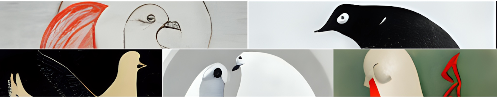

In Short
Thank you for your interest in this project and for accepting me into your mini-club.
Project
You are on the project's webpage - https://tinyriot.xyz.
This project was started with a thought in my head to develop the concept of NFTs Royalty, use it for some nicer, bigger things that it is used now. NFT Royalty will be used to accumulate funds on 1 (or several) humanitarian crypto-addresses that would be managed by 1 or several governors for the first time. When the governor will provide ETH new crypto-address I will update the contract, which will mean that a gentlemen's agreement is concluded between Us and the governor.
During the first year is planned to add a basic DAO mechanism and start to develop a fully automatic DAO mechanism.
This(-ese) humanitarian crypto-address(-es) will be used only for 1 (one) purpose - to distribute accumulated funds between proven humanitarian non-military, non-government organizations (example: RedCross) that are working locally where humanitarian catastrophe acceded. If there will not be any catastrophes - no transfers will be made at that time. During that period crypto-addresses (Set via Manifold Contracts) will stay in the accumulation regime.
Payments should be done at least once a year (preferably once a month) and all fund transfers will be publicly announced with all details provided.
The major communication channel for this account will be Twitter (@TinyRiotReal).
While doing that is planned to add multiple NFT collections with different technologies, starting with Dynamic NFTs - let's invent new ways of doing good things by mixing old and new concepts.
One of them - in the future is planned also to register this crypto-fund officially so those who buy NFT could 22.1% from the NFT price that will be sent to Accumulative crypto-accounts (Set via Manifold Contract) might use for some tax reliefs.

Collection: Twitter FreeBirds of the modern world
Images from this series are supposed to become avatars/Profile Picture for Twitter/Discord accounts for those people who support Humanitarian needs, want to help other people, and are standing for freedom of speech.
That is why the first candidate for Governor's role is Elon Musk. And now is the right time to show what we really are and ask him altogether. Might be if we all will ask him - he will agree.
Humanitarian NFT Royalty is set to 22% - and plus-minus is equal to the average VAT in European Union. Plus as a symbol - because I am trying to solve multiple the Catch 22 (Wiki) problems.
If he will decline - the first time I will manage it by myself but will contact other candidates from the list.
Total number of PFP NFTs : 5420 First part = 542. Total parts number = 10. The next collection part will be created and minted after half of FreeBirds from the previous part is bought.
44 NFTs from each part will be divided between 22 Twitter accounts. At least 22 of them will be given away by Twitter accounts for free to their subscribers.
All NFTs from this collection on the first sale will be always available for 0.1125 ETH.
A little more information can be found in the relevant sections of the site.
Example: More information about that idea of the project and personal motivation can be found here.
Collections can be found on:
- OpenSea (@OpenSea - you have to do something with max royalty amount)
- Rarible